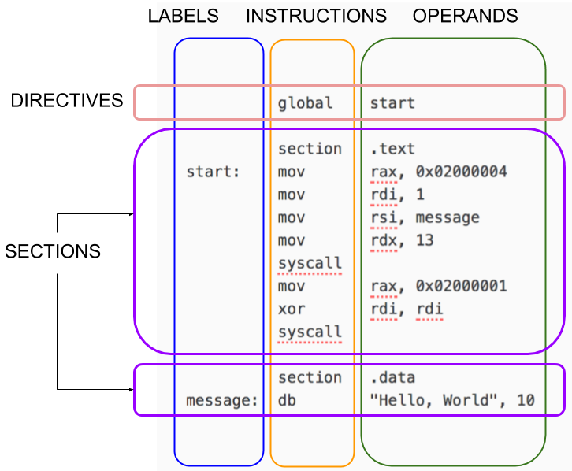

NASM Tutorial
Scope of the Tutorial
This tutorial will show you how to write assembly language programs on the x86-64 architecture.
You will write both (1) standalone programs and (2) programs that integrate with C.
We won’t get too fancy.
Your First Program
Before learning about nasm, let’s make sure you can type in and run programs.
Make sure both nasm and gcc are installed. Save one of the following programs as hello.asm, depending on your machine platform. Then run the program according to the given instructions.
If you are on a Linux-based OS:
; ----------------------------------------------------------------------------------------
; Writes "Hello, World" to the console using only system calls. Runs on 64-bit Linux only.
; To assemble and run:
;
; nasm -felf64 hello.asm && ld hello.o && ./a.out
; ----------------------------------------------------------------------------------------
global _start
section .text
_start: mov rax, 1 ; system call for write
mov rdi, 1 ; file handle 1 is stdout
mov rsi, message ; address of string to output
mov rdx, 13 ; number of bytes
syscall ; invoke operating system to do the write
mov rax, 60 ; system call for exit
xor rdi, rdi ; exit code 0
syscall ; invoke operating system to exit
section .data
message: db "Hello, World", 10 ; note the newline at the end
$ nasm -felf64 hello.asm && ld hello.o && ./a.out Hello, World
If you are on macOS:
; ----------------------------------------------------------------------------------------
; Writes "Hello, World" to the console using only system calls. Runs on 64-bit macOS only.
; To assemble and run:
;
; nasm -fmacho64 hello.asm && ld hello.o && ./a.out
; ----------------------------------------------------------------------------------------
global start
section .text
start: mov rax, 0x02000004 ; system call for write
mov rdi, 1 ; file handle 1 is stdout
mov rsi, message ; address of string to output
mov rdx, 13 ; number of bytes
syscall ; invoke operating system to do the write
mov rax, 0x02000001 ; system call for exit
xor rdi, rdi ; exit code 0
syscall ; invoke operating system to exit
section .data
message: db "Hello, World", 10 ; note the newline at the end
$ nasm -fmacho64 hello.asm && ld hello.o && ./a.out Hello, World
Structure of a NASM Program
NASM is line-based. Most programs consist of directives followed by one or more sections. Lines can have an optional label. Most lines have an instruction followed by zero or more operands.

Generally, you put code in a section called .text and your constant data in a section called .data.
Details
NASM is an awesome assembler, but assembly language is complex. You need more than a tutorial. You need details. Lots of details. Be ready to consult:
- The NASM Manual, which is pretty good!
- The Intel Processor Manuals
Your First Few Instructions
There are hundreds of instructions. You can’t learn them all at once. Just start with these:
mov x, y | x ← y |
and x, y | x ← x and y |
or x, y | x ← x or y |
xor x, y | x ← x xor y |
add x, y | x ← x + y |
sub x, y | x ← x – y |
inc x | x ← x + 1 |
dec x | x ← x – 1 |
syscall | Invoke an operating system routine |
db | A pseudo-instruction that declares bytes that will be in memory when the program runs |
The Three Kinds of Operands
Register Operands
In this tutorial we only care about the integer registers and the xmm registers. You should already know what the registers are, but here is a quick review. The 16 integer registers are 64 bits wide and are called:
R0 R1 R2 R3 R4 R5 R6 R7 R8 R9 R10 R11 R12 R13 R14 R15 RAX RCX RDX RBX RSP RBP RSI RDI
(Note that 8 of the registers have alternate names.) You can treat the lowest 32-bits of each register as a register itself but using these names:
R0D R1D R2D R3D R4D R5D R6D R7D R8D R9D R10D R11D R12D R13D R14D R15D EAX ECX EDX EBX ESP EBP ESI EDI
You can treat the lowest 16-bits of each register as a register itself but using these names:
R0W R1W R2W R3W R4W R5W R6W R7W R8W R9W R10W R11W R12W R13W R14W R15W AX CX DX BX SP BP SI DI
You can treat the lowest 8-bits of each register as a register itself but using these names:
R0B R1B R2B R3B R4B R5B R6B R7B R8B R9B R10B R11B R12B R13B R14B R15B AL CL DL BL SPL BPL SIL DIL
For historical reasons, bits 15 through 8 of R0..R3 are named:
AH CH DH BH
And finally, there are 16 XMM registers, each 128 bits wide, named:
XMM0 ... XMM15
Study this picture; hopefully it helps:

Memory Operands
These are the basic forms of addressing:
[ number ][ reg ][ reg + reg*scale ]scale is 1, 2, 4, or 8 only[ reg + number ][ reg + reg*scale + number ]
The number is called the displacement; the plain register is called the base; the register with the scale is called the index.
Examples:
[750] ; displacement only
[rbp] ; base register only
[rcx + rsi*4] ; base + index * scale
[rbp + rdx] ; scale is 1
[rbx - 8] ; displacement is -8
[rax + rdi*8 + 500] ; all four components
[rbx + counter] ; uses the address of the variable 'counter' as the displacement
Immediate Operands
These can be written in many ways. Here are some examples from the official docs.
200 ; decimal
0200 ; still decimal - the leading 0 does not make it octal
0200d ; explicitly decimal - d suffix
0d200 ; also decimal - 0d prefex
0c8h ; hex - h suffix, but leading 0 is required because c8h looks like a var
0xc8 ; hex - the classic 0x prefix
0hc8 ; hex - for some reason NASM likes 0h
310q ; octal - q suffix
0q310 ; octal - 0q prefix
11001000b ; binary - b suffix
0b1100_1000 ; binary - 0b prefix, and by the way, underscores are allowed
Instructions with two memory operands are extremely rare
In fact, we’ll not see any such instruction in this tutorial. Most of the basic instructions have only the following forms:
add reg, reg
|
add reg, mem
|
add reg, imm
|
add mem, reg
|
add mem, imm
|
Defining Data and Reserving Space
These examples come from Chapter 3 of the docs. To place data in memory:
db 0x55 ; just the byte 0x55
db 0x55,0x56,0x57 ; three bytes in succession
db 'a',0x55 ; character constants are OK
db 'hello',13,10,'$' ; so are string constants
dw 0x1234 ; 0x34 0x12
dw 'a' ; 0x61 0x00 (it's just a number)
dw 'ab' ; 0x61 0x62 (character constant)
dw 'abc' ; 0x61 0x62 0x63 0x00 (string)
dd 0x12345678 ; 0x78 0x56 0x34 0x12
dd 1.234567e20 ; floating-point constant
dq 0x123456789abcdef0 ; eight byte constant
dq 1.234567e20 ; double-precision float
dt 1.234567e20 ; extended-precision float
There are other forms; check the NASM docs. Later.
To reserve space (without initializing), you can use the following pseudo instructions. They
should go in a section called .bss (you'll get an error if you try to use them in
a .text section):
buffer: resb 64 ; reserve 64 bytes
wordvar: resw 1 ; reserve a word
realarray: resq 10 ; array of ten reals
Another Example
Here’s a macOS program to study:
; ----------------------------------------------------------------------------------------
; This is an OSX console program that writes a little triangle of asterisks to standard
; output. Runs on macOS only.
;
; nasm -fmacho64 triangle.asm && gcc hola.o && ./a.out
; ----------------------------------------------------------------------------------------
global start
section .text
start:
mov rdx, output ; rdx holds address of next byte to write
mov r8, 1 ; initial line length
mov r9, 0 ; number of stars written on line so far
line:
mov byte [rdx], '*' ; write single star
inc rdx ; advance pointer to next cell to write
inc r9 ; "count" number so far on line
cmp r9, r8 ; did we reach the number of stars for this line?
jne line ; not yet, keep writing on this line
lineDone:
mov byte [rdx], 10 ; write a new line char
inc rdx ; and move pointer to where next char goes
inc r8 ; next line will be one char longer
mov r9, 0 ; reset count of stars written on this line
cmp r8, maxlines ; wait, did we already finish the last line?
jng line ; if not, begin writing this line
done:
mov rax, 0x02000004 ; system call for write
mov rdi, 1 ; file handle 1 is stdout
mov rsi, output ; address of string to output
mov rdx, dataSize ; number of bytes
syscall ; invoke operating system to do the write
mov rax, 0x02000001 ; system call for exit
xor rdi, rdi ; exit code 0
syscall ; invoke operating system to exit
section .bss
maxlines equ 8
dataSize equ 44
output: resb dataSize
$ nasm -fmacho64 triangle.asm && ld triangle.o && ./a.out * ** *** **** ***** ****** ******* ********
New things in this example:
cmpdoes a comparisonjejumps to a label if the previous comparison was equal. We also havejne(jump if not equal),jl(jump if less),jnl(jump if not less),jg(jump if greater),jng(jump if not greater),jle(jump if less or equal),jnle(jump if not less or equal),jge(jump if greater or equal),jnge(jump if not greater or equal), and many more.equis actually not a real instruction. It simply defines an abbreviation for the assembler itself to use. (This is a profound idea.)- The
.bsssection is for writable data.
Using a C Library
Writing standalone programs with just system calls is cool, but rare. We would like to use the good stuff in the C library.
Remember how in C execution “starts” at the function main? That’s because the C library actually has the _start label inside itself! The code at _start does some initialization, then it calls main, then it does some clean up, then it issues the system call for exit. So you just have to implement main. We can do that in assembly!
If you have Linux, try this:
; ----------------------------------------------------------------------------------------
; Writes "Hola, mundo" to the console using a C library. Runs on Linux.
;
; nasm -felf64 hola.asm && gcc hola.o && ./a.out
; ----------------------------------------------------------------------------------------
global main
extern puts
section .text
main: ; This is called by the C library startup code
mov rdi, message ; First integer (or pointer) argument in rdi
call puts ; puts(message)
ret ; Return from main back into C library wrapper
message:
db "Hola, mundo", 0 ; Note strings must be terminated with 0 in C
$ nasm -felf64 hola.asm && gcc hola.o && ./a.out Hola, mundo
Under macOS, it will look a little different:
; ----------------------------------------------------------------------------------------
; This is an macOS console program that writes "Hola, mundo" on one line and then exits.
; It uses puts from the C library. To assemble and run:
;
; nasm -fmacho64 hola.asm && gcc hola.o && ./a.out
; ----------------------------------------------------------------------------------------
global _main
extern _puts
section .text
_main: push rbx ; Call stack must be aligned
lea rdi, [rel message] ; First argument is address of message
call _puts ; puts(message)
pop rbx ; Fix up stack before returning
ret
section .data
message: db "Hola, mundo", 0 ; C strings need a zero byte at the end
$ nasm -fmacho64 hola.asm && gcc hola.o && ./a.out Hola, mundo
In macOS land, C functions (or any function that is exported from one module to another, really) must be prefixed with underscores. The call stack must be aligned on a 16-byte boundary (more on this later). And when accessing named variables, a rel prefix is required.
Understanding Calling Conventions
How did we know the argument to puts was supposed to go in RDI?
Answer: there are a number of conventions that are followed regarding calls.
When writing code for 64-bit Linux that integrates with a C library, you must follow the calling conventions explained in the AMD64 ABI Reference. You can also get this information from Wikipedia. The most important points are:
- From left to right, pass as many parameters as will fit in registers. The order in which
registers are allocated, are:
- For integers and pointers,
rdi,rsi,rdx,rcx,r8,r9. - For floating-point (float, double),
xmm0,xmm1,xmm2,xmm3,xmm4,xmm5,xmm6,xmm7.
- For integers and pointers,
- Additional parameters are pushed on the stack, right to left, and are to be removed by the caller after the call.
- After the parameters are pushed, the call instruction is
made, so when the called function gets control, the return
address is at
[rsp], the first memory parameter is at[rsp+8], etc. - The stack pointer
rspmust be aligned to a 16-byte boundary before making a call. Fine, but the process of making a call pushes the return address (8 bytes) on the stack, so when a function gets control,rspis not aligned. You have to make that extra space yourself, by pushing something or subtracting 8 fromrsp. - The only registers that the called function is required to preserve (the calle-save registers)
are:
rbp,rbx,r12,r13,r14,r15. All others are free to be changed by the called function. - The callee is also supposed to save the control bits of the XMCSR and the x87 control word, but x87 instructions are rare in 64-bit code so you probably don’t have to worry about this.
- Integers are returned in
raxorrdx:rax, and floating point values are returned inxmm0orxmm1:xmm0.
Got that? No? What’s need is more examples, and practice.
Here is a program that illustrates how registers have to be saved and restored:
; -----------------------------------------------------------------------------
; A 64-bit Linux application that writes the first 90 Fibonacci numbers. To
; assemble and run:
;
; nasm -felf64 fib.asm && gcc fib.o && ./a.out
; -----------------------------------------------------------------------------
global main
extern printf
section .text
main:
push rbx ; we have to save this since we use it
mov ecx, 90 ; ecx will countdown to 0
xor rax, rax ; rax will hold the current number
xor rbx, rbx ; rbx will hold the next number
inc rbx ; rbx is originally 1
print:
; We need to call printf, but we are using rax, rbx, and rcx. printf
; may destroy rax and rcx so we will save these before the call and
; restore them afterwards.
push rax ; caller-save register
push rcx ; caller-save register
mov rdi, format ; set 1st parameter (format)
mov rsi, rax ; set 2nd parameter (current_number)
xor rax, rax ; because printf is varargs
; Stack is already aligned because we pushed three 8 byte registers
call printf ; printf(format, current_number)
pop rcx ; restore caller-save register
pop rax ; restore caller-save register
mov rdx, rax ; save the current number
mov rax, rbx ; next number is now current
add rbx, rdx ; get the new next number
dec ecx ; count down
jnz print ; if not done counting, do some more
pop rbx ; restore rbx before returning
ret
format:
db "%20ld", 10, 0
$ nasm -felf64 fib.asm && gcc fib.o && ./a.out
0
1
1
2
.
.
.
679891637638612258
1100087778366101931
1779979416004714189
We just saw some new instructions:
push x | Decrement rsp by the size of the operand, then store x in [rsp]
|
pop x | Move [rsp] into x, then increment rsp by the size of the operand
|
jnz label | If the processor’s Z (zero) flag, is set, jump to the given label |
call label | Push the address of the next instruction, then jump to the label |
ret | Pop into the instruction pointer |
Mixing C and Assembly Language
This program is just a simple function that takes in three integer parameters and returns the maximum value.
; -----------------------------------------------------------------------------
; A 64-bit function that returns the maximum value of its three 64-bit integer
; arguments. The function has signature:
;
; int64_t maxofthree(int64_t x, int64_t y, int64_t z)
;
; Note that the parameters have already been passed in rdi, rsi, and rdx. We
; just have to return the value in rax.
; -----------------------------------------------------------------------------
global maxofthree
section .text
maxofthree:
mov rax, rdi ; result (rax) initially holds x
cmp rax, rsi ; is x less than y?
cmovl rax, rsi ; if so, set result to y
cmp rax, rdx ; is max(x,y) less than z?
cmovl rax, rdx ; if so, set result to z
ret ; the max will be in rax
Here is a C program that calls the assembly language function.
/*
* A small program that illustrates how to call the maxofthree function we wrote in
* assembly language.
*/
#include <stdio.h>
#include <inttypes.h>
int64_t maxofthree(int64_t, int64_t, int64_t);
int main() {
printf("%ld\n", maxofthree(1, -4, -7));
printf("%ld\n", maxofthree(2, -6, 1));
printf("%ld\n", maxofthree(2, 3, 1));
printf("%ld\n", maxofthree(-2, 4, 3));
printf("%ld\n", maxofthree(2, -6, 5));
printf("%ld\n", maxofthree(2, 4, 6));
return 0;
}
$ nasm -felf64 maxofthree.asm && gcc callmaxofthree.c maxofthree.o && ./a.out 1 2 3 4 5 6
Conditional Instructions
After an arithmetic or logic instruction, or the compare instruction, cmp,
the processor sets or clears bits in its rflags. The most interesting flags
are:
s(sign)z(zero)c(carry)o(overflow)
So after doing, say, an addition instruction, we can perform a jump, move, or set, based on the new flag settings. For example:
jz label | Jump to label L if the result of the operation was zero |
cmovno x, y | x ← y if the last operation did not overflow |
setc x | x ← 1 if the last operation had a carry, but x ← 0 otherwise (x must be a byte-size register or memory location) |
The conditional instructions have three base forms: j for conditional jump,
cmov for conditional move, and set for conditional set.
The suffix of the instruction has one of the 30 forms:
s ns z nz c nc o no p np pe po e ne l nl le nle g ng ge nge a na ae nae b nb
be nbe.
Command Line Arguments
You know that in C, main is just a plain old function,
and it has a couple parameters of its own:
int main(int argc, char** argv)
So, you guessed it, argc will end up in rdi, and
argv (a pointer) will end up in rsi. Here is a program
that uses this fact to simply echo the commandline arguments to a program, one
per line:
; -----------------------------------------------------------------------------
; A 64-bit program that displays its command line arguments, one per line.
;
; On entry, rdi will contain argc and rsi will contain argv.
; -----------------------------------------------------------------------------
global main
extern puts
section .text
main:
push rdi ; save registers that puts uses
push rsi
sub rsp, 8 ; must align stack before call
mov rdi, [rsi] ; the argument string to display
call puts ; print it
add rsp, 8 ; restore %rsp to pre-aligned value
pop rsi ; restore registers puts used
pop rdi
add rsi, 8 ; point to next argument
dec rdi ; count down
jnz main ; if not done counting keep going
ret
$ nasm -felf64 echo.asm && gcc echo.o && ./a.out dog 22 -zzz "hi there" ./a.out dog 22 -zzz hi there
A Longer Example
Note that as far as the C Library is concerned, command line
arguments are always strings. If you want to treat them as integers,
call atoi. Here’s a neat program to compute xy.
; -----------------------------------------------------------------------------
; A 64-bit command line application to compute x^y.
;
; Syntax: power x y
; x and y are (32-bit) integers
; -----------------------------------------------------------------------------
global main
extern printf
extern puts
extern atoi
section .text
main:
push r12 ; save callee-save registers
push r13
push r14
; By pushing 3 registers our stack is already aligned for calls
cmp rdi, 3 ; must have exactly two arguments
jne error1
mov r12, rsi ; argv
; We will use ecx to count down form the exponent to zero, esi to hold the
; value of the base, and eax to hold the running product.
mov rdi, [r12+16] ; argv[2]
call atoi ; y in eax
cmp eax, 0 ; disallow negative exponents
jl error2
mov r13d, eax ; y in r13d
mov rdi, [r12+8] ; argv
call atoi ; x in eax
mov r14d, eax ; x in r14d
mov eax, 1 ; start with answer = 1
check:
test r13d, r13d ; we're counting y downto 0
jz gotit ; done
imul eax, r14d ; multiply in another x
dec r13d
jmp check
gotit: ; print report on success
mov rdi, answer
movsxd rsi, eax
xor rax, rax
call printf
jmp done
error1: ; print error message
mov edi, badArgumentCount
call puts
jmp done
error2: ; print error message
mov edi, negativeExponent
call puts
done: ; restore saved registers
pop r14
pop r13
pop r12
ret
answer:
db "%d", 10, 0
badArgumentCount:
db "Requires exactly two arguments", 10, 0
negativeExponent:
db "The exponent may not be negative", 10, 0
$ nasm -felf64 power.asm && gcc -o power power.o $ ./power 2 19 524288 $ ./power 3 -8 The exponent may not be negative $ ./power 1 500 1 $ ./power 1 Requires exactly two arguments
Floating Point Instructions
Floating-point arguments go int the xmm registers. Here is a simple function for summing the values in a double array:
; -----------------------------------------------------------------------------
; A 64-bit function that returns the sum of the elements in a floating-point
; array. The function has prototype:
;
; double sum(double[] array, uint64_t length)
; -----------------------------------------------------------------------------
global sum
section .text
sum:
xorpd xmm0, xmm0 ; initialize the sum to 0
cmp rsi, 0 ; special case for length = 0
je done
next:
addsd xmm0, [rdi] ; add in the current array element
add rdi, 8 ; move to next array element
dec rsi ; count down
jnz next ; if not done counting, continue
done:
ret ; return value already in xmm0
Note the floating point instructions have an sd suffix; that’s the
most common one, but we’ll see some other ones later. Here is a C program that calls it:
/*
* Illustrates how to call the sum function we wrote in assembly language.
*/
#include <stdio.h>
#include <inttypes.h>
double sum(double[], uint64_t);
int main() {
double test[] = {
40.5, 26.7, 21.9, 1.5, -40.5, -23.4
};
printf("%20.7f\n", sum(test, 6));
printf("%20.7f\n", sum(test, 2));
printf("%20.7f\n", sum(test, 0));
printf("%20.7f\n", sum(test, 3));
return 0;
}
$ nasm -felf64 sum.asm && gcc sum.o callsum.c && ./a.out
26.7000000
67.2000000
0.0000000
89.1000000
Data Sections
The text section is read-only on most operating systems, so you might find the need for a data section. On most operating systems, the data section is only for initialized data, and you have a special .bss section for uninitialized data. Here is a program that averages the command line arguments, expected to be integers, and displays the result as a floating point number.
; -----------------------------------------------------------------------------
; 64-bit program that treats all its command line arguments as integers and
; displays their average as a floating point number. This program uses a data
; section to store intermediate results, not that it has to, but only to
; illustrate how data sections are used.
; -----------------------------------------------------------------------------
global main
extern atoi
extern printf
default rel
section .text
main:
dec rdi ; argc-1, since we don't count program name
jz nothingToAverage
mov [count], rdi ; save number of real arguments
accumulate:
push rdi ; save register across call to atoi
push rsi
mov rdi, [rsi+rdi*8] ; argv[rdi]
call atoi ; now rax has the int value of arg
pop rsi ; restore registers after atoi call
pop rdi
add [sum], rax ; accumulate sum as we go
dec rdi ; count down
jnz accumulate ; more arguments?
average:
cvtsi2sd xmm0, [sum]
cvtsi2sd xmm1, [count]
divsd xmm0, xmm1 ; xmm0 is sum/count
mov rdi, format ; 1st arg to printf
mov rax, 1 ; printf is varargs, there is 1 non-int argument
sub rsp, 8 ; align stack pointer
call printf ; printf(format, sum/count)
add rsp, 8 ; restore stack pointer
ret
nothingToAverage:
mov rdi, error
xor rax, rax
call printf
ret
section .data
count: dq 0
sum: dq 0
format: db "%g", 10, 0
error: db "There are no command line arguments to average", 10, 0
$ nasm -felf64 average.asm && gcc average.o && ./a.out 19 8 21 -33 3.75 $ nasm -felf64 average.asm && gcc average.o && ./a.out There are no command line arguments to average
This program highlighted some processor instructions that convert between integers and floating point values. A few of the most common are:
cvtsi2sd xmmreg, r/m32 | xmmreg[63..0] ← intToDouble(r/m32) |
cvtsi2ss xmmreg, r/m32 | xmmreg[31..0] ← intToFloat(r/m32) |
cvtsd2si reg32, xmmr/m64 | reg32 ← doubleToInt(xmmr/m64) |
cvtss2si reg32, xmmr/m32 | reg32 ← floatToInt(xmmr/m32) |
Recursion
Perhaps surprisingly, there’s nothing out of the ordinary required to implement recursive functions. You just have to be careful to save registers, as usual. Pushing and popping around the recursive call is a typical strategy.
; ----------------------------------------------------------------------------
; An implementation of the recursive function:
;
; uint64_t factorial(uint64_t n) {
; return (n <= 1) ? 1 : n * factorial(n-1);
; }
; ----------------------------------------------------------------------------
global factorial
section .text
factorial:
cmp rdi, 1 ; n <= 1?
jnbe L1 ; if not, go do a recursive call
mov rax, 1 ; otherwise return 1
ret
L1:
push rdi ; save n on stack (also aligns %rsp!)
dec rdi ; n-1
call factorial ; factorial(n-1), result goes in %rax
pop rdi ; restore n
imul rax, rdi ; n * factorial(n-1), stored in %rax
ret
An example caller:
/*
* An application that illustrates calling the factorial function defined elsewhere.
*/
#include <stdio.h>
#include <inttypes.h>
uint64_t factorial(uint64_t n);
int main() {
for (uint64_t i = 0; i < 20; i++) {
printf("factorial(%2lu) = %lu\n", i, factorial(i));
}
return 0;
}
$ nasm -felf64 factorial.asm && gcc -std=c99 factorial.o callfactorial.c && ./a.out factorial( 0) = 1 factorial( 1) = 1 factorial( 2) = 2 factorial( 3) = 6 factorial( 4) = 24 factorial( 5) = 120 factorial( 6) = 720 factorial( 7) = 5040 factorial( 8) = 40320 factorial( 9) = 362880 factorial(10) = 3628800 factorial(11) = 39916800 factorial(12) = 479001600 factorial(13) = 6227020800 factorial(14) = 87178291200 factorial(15) = 1307674368000 factorial(16) = 20922789888000 factorial(17) = 355687428096000 factorial(18) = 6402373705728000 factorial(19) = 121645100408832000
SIMD Parallelism
The XMM registers can do arithmetic on floating point values one operation at a time (scalar) or multiple operations at a time (packed). The operations have the form:
op xmmreg_or_memory, xmmreg
|
For floating point addition, the instructions are:
addpd | do 2 double-precision additions in parallel (add packed double) |
addsd | do just one double-precision addition, using the low 64-bits of the register (add scalar double) |
addps | do 4 single-precision additions in parallel (add packed single) |
addss | do just one single-precision addition, using the low 32-bits of the register (add scalar single) |
Here’s a function that adds four floats at once:
; void add_four_floats(float x[4], float y[4])
; x[i] += y[i] for i in range(0..4)
global add_four_floats
section .text
add_four_floats:
movdqa xmm0, [rdi] ; all four values of x
movdqa xmm1, [rsi] ; all four values of y
addps xmm0, xmm1 ; do all four sums in one shot
movdqa [rdi], xmm0
ret
and a caller:
#include <stdio.h>
void add_four_floats(float[], float[]);
int main() {
float x[] = {-29.750, 244.333, 887.29, 48.1E22};
float y[] = {29.750, 199.333, -8.29, 22.1E23};
add_four_floats(x, y);
printf("%f\n%f\n%f\n%f\n", x[0], x[1], x[2], x[3]);
return 0;
}
Also see this nice little x86 floating-point slide deck from Ray Seyfarth.
Saturated Arithmetic
The XMM registers can also do arithmetic on integers. The instructions have the form:
op xmmreg_or_memory, xmmreg
|
For integer addition, the instructions are:
paddb | do 16 byte-additions |
paddw | do 8 word-additions |
paddd | do 4 dword-additions |
paddq | do 2 qword-additions |
paddsb | do 16 byte-additions with signed saturation (80..7F) |
paddsw | do 8 word-additions with signed saturation (8000..7F) |
paddusb | do 16 byte-additions with unsigned saturation (00..FF) |
paddusw | do 8 word-additions with unsigned saturation (00..FFFF) |
Here’s an example. It also illustrates how you load the XMM registers. You can’t load immediate
values; you have to use movaps to move from memory. There are other ways, but we’re not
covering everything in this tutorial.
; ----------------------------------------------------------------------------------------
; Example of signed saturated arithmetic.
; ----------------------------------------------------------------------------------------
global main
extern printf
section .text
main:
push rbp
movaps xmm0, [arg1]
movaps xmm1, [arg2]
paddsw xmm0, xmm1
movaps [result], xmm0
lea rdi, [format]
mov esi, dword [result]
mov edx, dword [result+4]
mov ecx, dword [result+8]
mov r8d, dword [result+12]
xor rax, rax
call printf
pop rbp
ret
section .data
align 16
arg1: dw 0x3544,0x24FF,0x7654,0x9A77,0xF677,0x9000,0xFFFF,0x0000
arg2: dw 0x7000,0x1000,0xC000,0x1000,0xB000,0xA000,0x1000,0x0000
result: dd 0, 0, 0, 0
format: db '%x%x%x%x',10,0
Graphics
TODO
Local Variables and Stack Frames
First, please read Eli Bendersky’s article That overview is more complete than my brief notes.
When a function is called the caller will first put the parameters in the correct
registers then issue the call instruction. Additional parameters beyond those
covered by the registers will be pushed on the stack prior to the call. The call instruction puts
the return address on the top of stack. So if you have the function
int64_t example(int64_t x, int64_t y) {
int64_t a, b, c;
b = 7;
return x * b + y;
}
Then on entry to the function, x will be in edi, y will be in esi, and the return address will be on the top of the stack. Where can we put the local variables? An easy choice is on the stack itself, though if you have enough regsters, use those.
If you are running on a machine that respect the standard ABI, you can leave rsp where it is and access the "extra parameters" and the local variables directly from rsp for example:
+----------+
rsp-24 | a |
+----------+
rsp-16 | b |
+----------+
rsp-8 | c |
+----------+
rsp | retaddr |
+----------+
rsp+8 | caller's |
| stack |
| frame |
| ... |
+----------+
So our function looks like this:
global example
section .text
example:
mov qword [rsp-16], 7
mov rax, rdi
imul rax, [rsp+8]
add rax, rsi
ret
If our function were to make another call, you would have to adjust rsp to get out of the way at that time.
On Windows you can’t use this scheme because if an interrupt were to occur, everything above the stack pointer gets plastered. This doesn’t happen on most other operating systems because there is a "red zone" of 128 bytes past the stack pointer which is safe from these things. In this case, you can make room on the stack immediately:
example:
sub rsp, 24
so our stack looks like this:
+----------+
rsp | a |
+----------+
rsp+8 | b |
+----------+
rsp+16 | c |
+----------+
rsp+24 | retaddr |
+----------+
rsp+32 | caller's |
| stack |
| frame |
| ... |
+----------+
Here’s the function now. Note that we have to remember to replace the stack pointer before returning!
global example
section .text
example:
sub rsp, 24
mov qword [rsp+8], 7
mov rax, rdi
imul rax, [rsp+8]
add rax, rsi
add rsp, 24
ret
Using NASM on macOS
Hopefully you’ve gone through the whole tutorial above using a Linux-based operating system (or perhaps more correctly, and ELF64 system). There are pretty much only five thing to know to get these examples working under a 64-bit macOS system:
- This object file format is
macho64, notelf64. - The system call numbers are totally different.
- Symbols shared between modules will be prefixed by underscores.
- It seems that the gcc linker in macOS doesn’t allow absolute addressing unless
you tweak some settings. So add
default relwhen you are referencing labeled memory locations, and always useleato get your addresses. - Also, it appears that sometimes under Linux, the 16-bit stack alignment requirement is not enforced, but it appears to be always enforced under macOS.
So here’s the average program from above, written for macOS.
; -----------------------------------------------------------------------------
; 64-bit program that treats all its command line arguments as integers and
; displays their average as a floating point number. This program uses a data
; section to store intermediate results, not that it has to, but only to
; illustrate how data sections are used.
;
; Designed for OS X. To assemble and run:
;
; nasm -fmacho64 average.asm && gcc average.o && ./a.out
; -----------------------------------------------------------------------------
global _main
extern _atoi
extern _printf
default rel
section .text
_main:
push rbx ; we don't ever use this, but it is necesary
; to align the stack so we can call stuff
dec rdi ; argc-1, since we don't count program name
jz nothingToAverage
mov [count], rdi ; save number of real arguments
accumulate:
push rdi ; save register across call to atoi
push rsi
mov rdi, [rsi+rdi*8] ; argv[rdi]
call _atoi ; now rax has the int value of arg
pop rsi ; restore registers after atoi call
pop rdi
add [sum], rax ; accumulate sum as we go
dec rdi ; count down
jnz accumulate ; more arguments?
average:
cvtsi2sd xmm0, [sum]
cvtsi2sd xmm1, [count]
divsd xmm0, xmm1 ; xmm0 is sum/count
lea rdi, [format] ; 1st arg to printf
mov rax, 1 ; printf is varargs, there is 1 non-int argument
call _printf ; printf(format, sum/count)
jmp done
nothingToAverage:
lea rdi, [error]
xor rax, rax
call _printf
done:
pop rbx ; undoes the stupid push at the beginning
ret
section .data
count: dq 0
sum: dq 0
format: db "%g", 10, 0
error: db "There are no command line arguments to average", 10, 0
$ nasm -fmacho64 average.asm && gcc average.o && ./a.out There are no command line arguments to average $ nasm -fmacho64 average.asm && gcc average.o && ./a.out 54.3 54 $ nasm -fmacho64 average.asm && gcc average.o && ./a.out 54.3 -4 -3 -25 455.1111 95.4
Using NASM on Windows
I’m not sure what the system calls are on Windows, but I do know that if you want to assemble and link with the C library, you have to understand the x64 conventions. Read them. You will learn such things as:
- The first four integer parameters are passed in RCX, RDX, R8, and R9. The rest are to be pushed on the stack.
- The callee must preserve RBX, RBP, RDI, RSI, RSP, R12, R13, R14, and R15.
- The first four floating point parameters are passed in, you guessed it, XMM0, XMM1, XMM2, and XMM3.
- Return values go in RAX or XMM0.
IMPORTANT: There’s one thing that’s really hard to find in any documentation: the x64 calling convention requires you to allocate 32 bytes of shadow space before each call, and remove it after your call. This means your “hello world” program looks like this:
; ----------------------------------------------------------------------------------------
; This is a Win64 console program that writes "Hello" on one line and then exits. It
; uses puts from the C library. To assemble and run:
;
; nasm -fwin64 hello.asm && gcc hello.obj && a
; ----------------------------------------------------------------------------------------
global main
extern puts
section .text
main:
sub rsp, 28h ; Reserve the shadow space
mov rcx, message ; First argument is address of message
call puts ; puts(message)
add rsp, 28h ; Remove shadow space
ret
message:
db 'Hello', 0 ; C strings need a zero byte at the end
Did you notice we actually reserved 40 bytes? Thirty-two bytes of shadow space is a minimum requirement. In our main function, we are calling another function, so our stack must be aligned on a 16-byte boundary. When main is called, the return address (8 bytes) was pushed, so we have to “add” an extra 8 bytes to the shadow space.